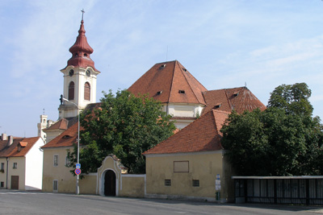

kostel Nanebevzetí Panny Marie
nejnovětší články
Děkovná mše za 50 let kněžství

Děkovná mše za 50 let kněžství
Děkovná mše za 50 let kněžství

Pravidelné bohoslužby
neděle - 8.30h
|
úterý, středa, pátek - 17.00h
|
čtvrtek - 7.00h
|
sobota - 8.00h
Kontakt - Farní kancelář
Husova 124, Postoloprty
|
email - farnost.postoloprty@dltm.cz